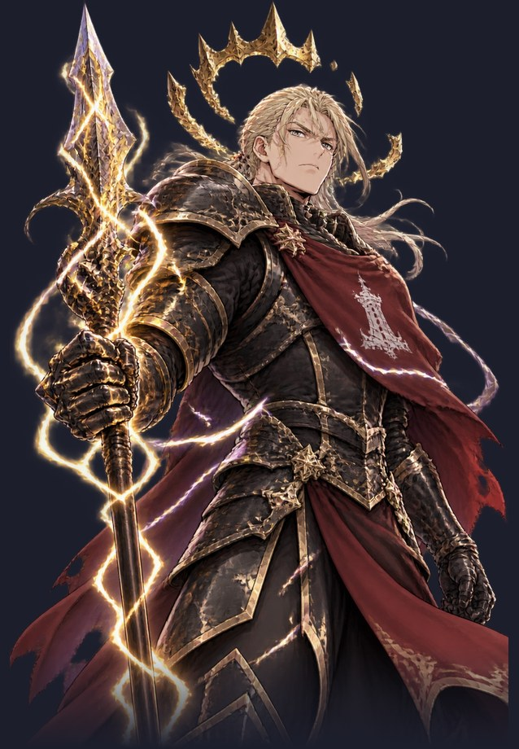
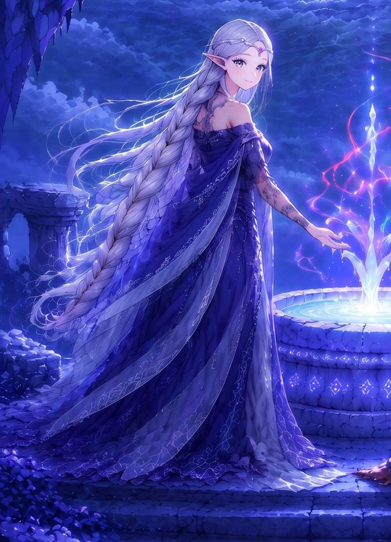
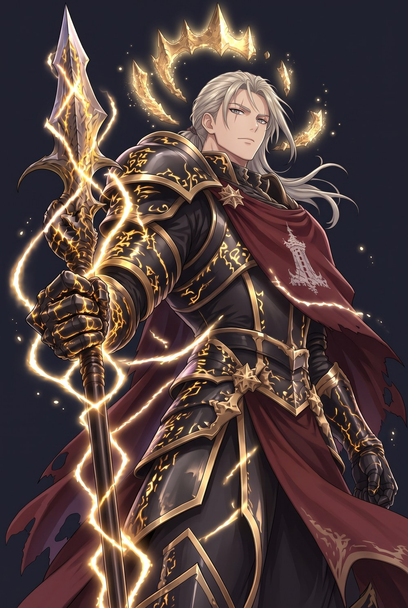
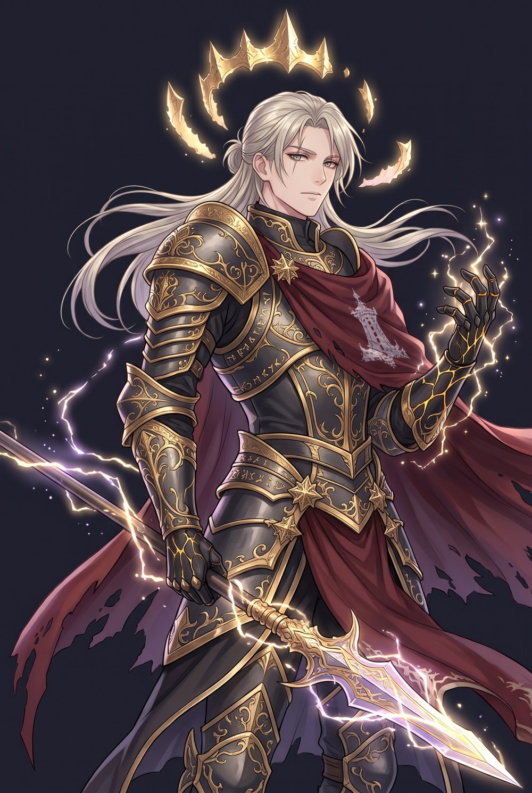
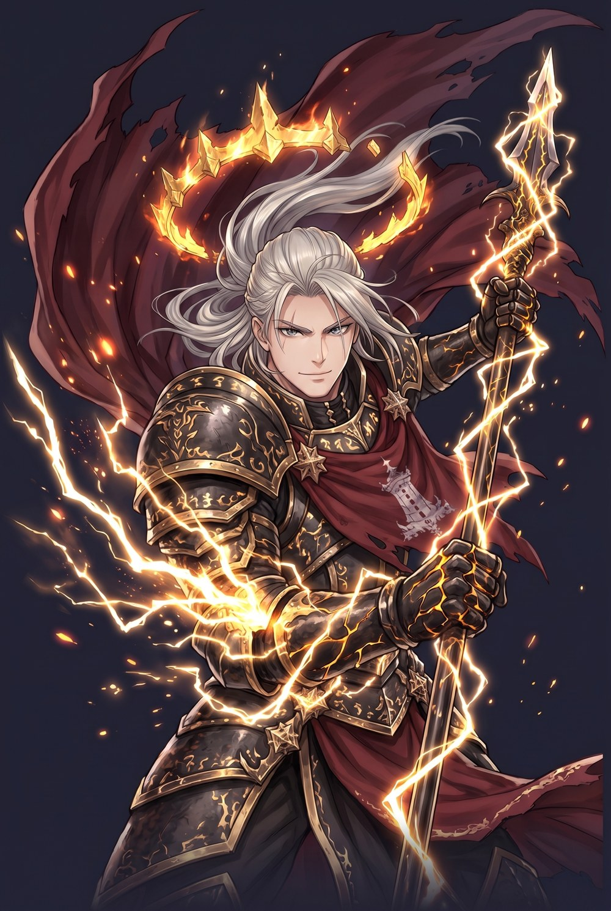

雷恩 · 卡斯坦 · 熔冠天骑：立绘调优三版
This is a fine-tuning pass only: his look and character stay the same (silver-blond hair, black-and-gold armour, crimson banner cloak, molten-crown lightning arm, ring of crown fragments, lightning spear). The art is redrawn in the 守泉人's anime gacha style: cleaner lines, clean cel shading, rim light, and a properly drawn anime face. Pick one and I'll cut it out, put it in the game, and send a new build.
参考：现版 vs 守泉人画风

现版: semi-realistic and western in feel, with heavy hatching; the face is mature and stiff, and the style doesn't match the other characters.

目标画风: 薇丝塔 (守泉人) uses fine lines, soft shading, glowing particles and glossy hair.
脸部对比
三版方案

A忠实精修 (the smallest change)
- Pose, composition and silhouette are almost identical to the current art, so it slots straight into the 战斗 layout.
- The face is now an anime bishounen with a calm, proud and weary expression that fits 「我见过一个人走上去，他再也没下来」.
- The gold patterns on the armour glow like molten gold, matching the melted crown in his story.

B俊美 (closest to the 守泉人 and 克洛伊 look)
- Slimmer and longer-legged, with long hair blowing in the wind, gold filigree on the armour, and soft gold-violet lightning.
- The face is the most handsome of the three, with a melancholy look in the eyes, suiting the tragic sworn-brother story.
- The spear is held diagonally and his lightning hand is half raised, as if 「挡住每一个往上走的人」.

C威压 (the most boss-like)
- A low angle, cloak and hair torn upward by the storm, crown fragments ablaze, and lightning bursting from his right arm.
- He looks straight at the player with a faint provocative smile: the "final boss of the 壁垒" feel.
- The trade-off: of the three, his face has the strongest lines and he looks the most mature.
我的推荐
I recommend B. It best matches the art style of 薇丝塔 and 克洛伊 and the "beautiful, sad sworn brother" persona; it's the closest to a gacha game's top-tier male lead. Pick A if you want the battle screen to change as little as possible. Pick C if you want more "boss" pressure. You can also mix them, for example B's face with C's pose.